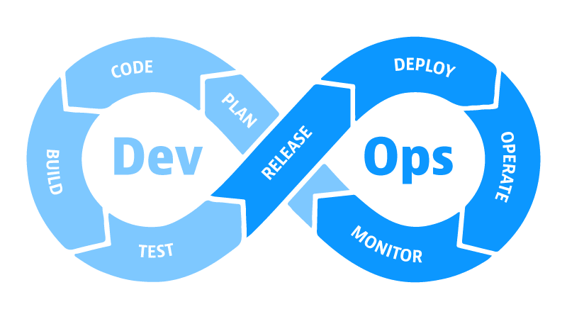

AI DevOps¶
DevOps¶
DevOps is a set of practices that combines software development (Dev) and IT operations (Ops). It aims to shorten the systems development life cycle and provide continuous delivery with high software quality. DevOps is complementary to Agile software development; several DevOps aspects came from Agile methodology.

The DevOps lifecycle¶
- Plan: Define the objectives, requirements, and scope of the project.
- Code: Write and test the code in a controlled environment.
- Build: Compile the code and create build artifacts.
- Test: Run automated tests to ensure code quality.
- Release: Deploy the build artifacts to a staging environment.
- Deploy: Release the code to a production environment.
- Operate: Monitor the system for performance and issues.
- Monitor: Continuously monitor the system and collect feedback.
- Feedback: Collect feedback from users and stakeholders to improve the system.
AI powered DevOps¶
AI powered DevOps is the application of artificial intelligence (AI) to enhance the DevOps process. AI can be used to automate repetitive tasks, predict system failures, and optimize system performance. AI powered DevOps can help organizations improve their software development process, reduce downtime, and increase productivity.
AI use cases in DevOps¶
1. Plan Phase¶
Use AI can helps to brainstorm and generate ideas for the project, also can be use in design thinking.
2. Code phase¶
The AI can be integrated with code editors to provide code suggestions, detect errors, and improve code quality.
3. Build and lint¶
In code lint phase, the AI can be integrated to provide suggestions / correction for the new code.
4. Test¶
AI can be used to generate test cases, automate test execution, and analyze test result.
5. Release¶
- AI can be used to generate release notes base on the code changes.
- AI can act as clean code master to review the code changes.
6. Deploy¶
AI can be used to automate the deployment process, predict system failures.
7. Operate¶
AI Ops is a big topic, it can be used to monitor the system, detect failures, and analyze the logs, base on the analysis result to report bug or suggest improvement.
8. Monitor¶
AI can be used to monitor the system performance, detect anomalies, and predict system failures.
9. Feedback¶
AI can be used to collect feedback from users and stakeholders, analyze the data, and suggest improvements.
Importance of AI in DevOps¶
Even AI can do many things, but it still need human to validate the result and make the decision.
AI can’t replace human, it will always be a tool/assistant to help human to do the work.